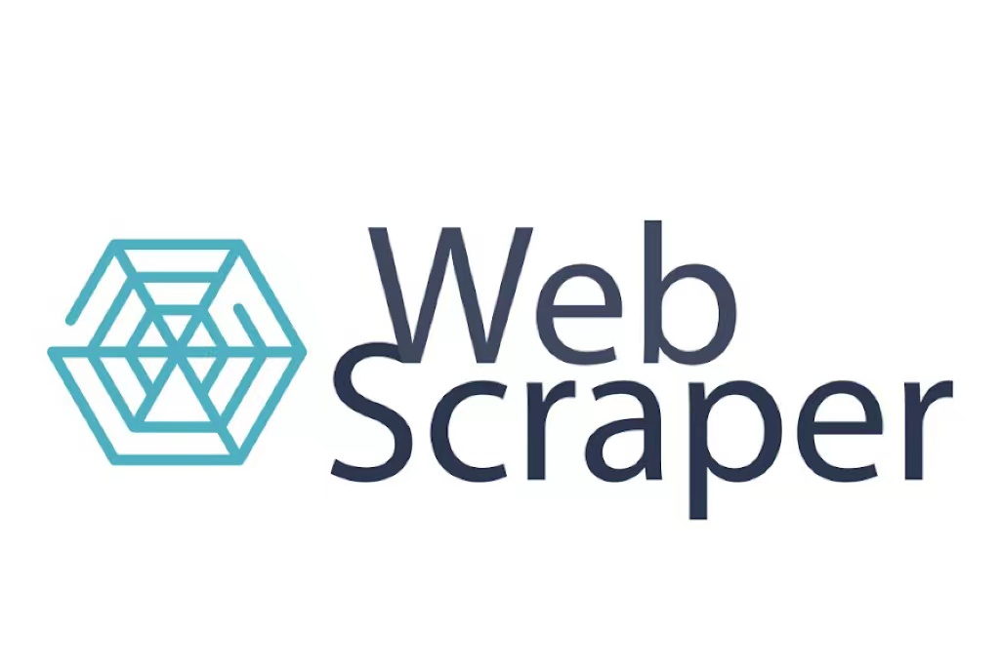

Junior Software Developer.
Start learning programming from 2022 and complete multiple projects during study and work. I really love programming and I love my job. When completing each project, I will try my best to make it perfect and make the client happy.
PORTFOLIO
Book Finder App

Calculator
Image Flipper
Javascript Slideshow
Countdown Timer

Webscraper
ABOUT.
Learning to code is a satisfying, rewarding experience — especially if you're teaching yourself with online programming courses. Still, most developers agree that if you really want to learn how to code, you'll need to create something. What's the point in learning about programming languages, libraries, and tools if you're not applying that knowledge to a project?
Creating coding projects, like simple text-based applications, is the best way to instill the skills and knowledge you gain as you learn how to code. These projects help teach you the basics of programming, force you to think like a developer, and expose you to the tools you'll use later in your career. To help you gain some hands-on experience, we've created this list of 10 coding projects for beginners.